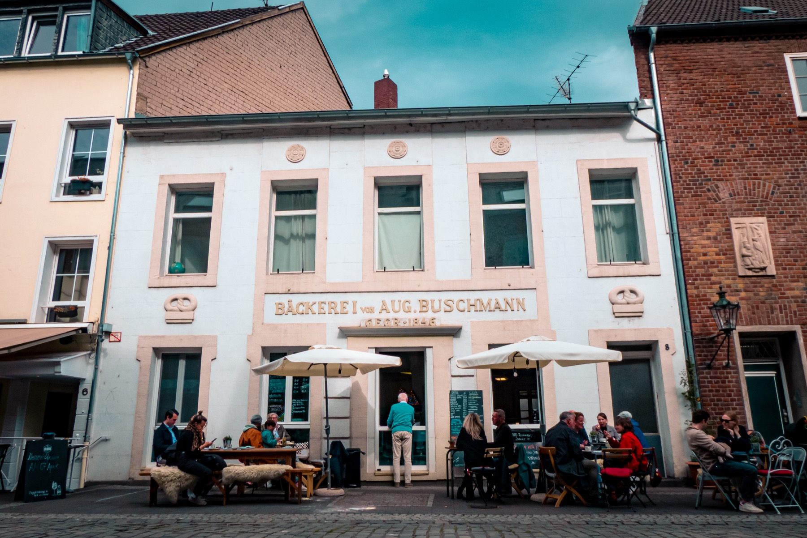
Düsseldorfer Pâtisserie.
Seit 1846.
In der Akademiestraße wird unter der Woche für Gastronomie, Catering und besondere Anlässe gebacken. Samstags ist von 12 bis 17 Uhr die Tür für Kaffee und Kuchen offen.
Das Haus
Buschmann 1846 ist eine Backstube in der Düsseldorfer Altstadt. Unter der Woche entstehen hier Kuchen, Torten und Pâtisserie für Cafés, Gastronomie, Unternehmen und private Anlässe. Ausgeliefert wird in Düsseldorf und Umgebung. Und einmal in der Woche, samstags, geht das Fenster zur Akademiestraße auf.
Geschichte
1846 fing alles in der Akademiestraße an.
August Buschmann eröffnete hier seine Backstube — dieselben Räume, in denen heute wieder gebacken wird. Sechs Generationen haben den Betrieb durch zwei Weltkriege getragen, zeitweise mit rund 120 Beschäftigten und fünf Standorten in Düsseldorf.
Gregor Buschmann, direkter Nachfahre des Gründers, wuchs in der Altstadt auf und holte sich als Schüler der Maxschule nach dem Unterricht häufig ein Teilchen aus der Backstube. Nach Jahren als Koch, Küchenchef, Sous-Chef und Pâtissier in Düsseldorf und der Schweiz steht er seit Januar 2021 wieder dort, wo 1846 alles anfing.
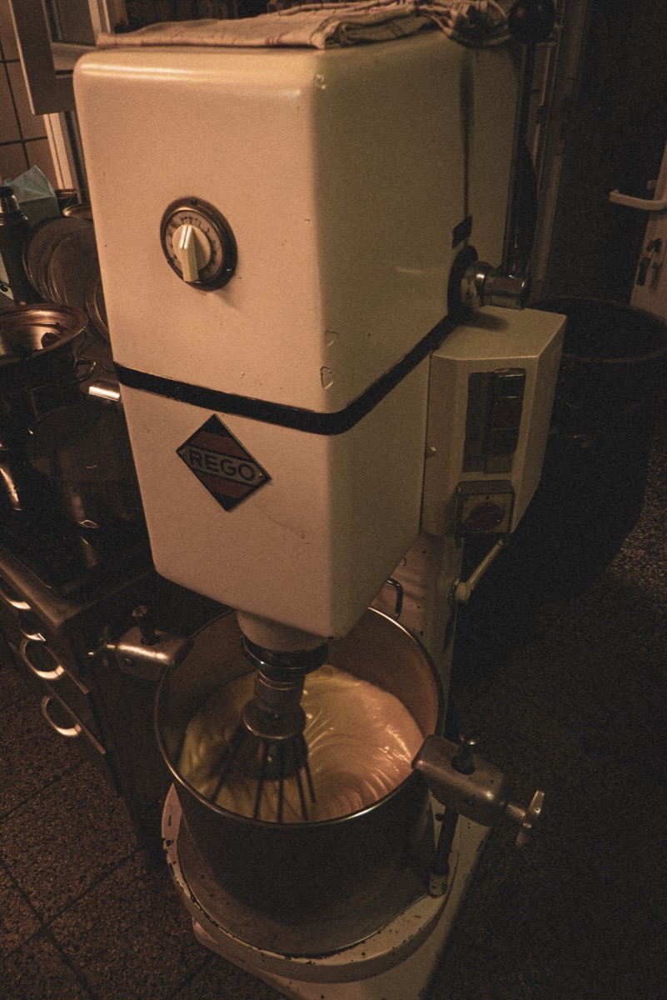
Chronologie
- 1846
August Buschmann gründet die Bäckerei und Backstube an der Akademiestraße.
- 1950
Das Café an der Flinger Straße öffnet nach dem Krieg wieder.
- 1970er
Rund 120 Menschen arbeiten zeitweise für Buschmann.
- 1980er
Bis Mitte des Jahrzehnts gehören fünf Düsseldorfer Standorte zum Unternehmen.
- 2021
Gregor Buschmann nimmt die Arbeit in der historischen Backstube wieder auf.
- Heute
Unter der Woche wird produziert und ausgeliefert. Samstags gibt es Kaffee und Kuchen.
Pâtisserie
Kuchen, Torten, Pâtisserie.
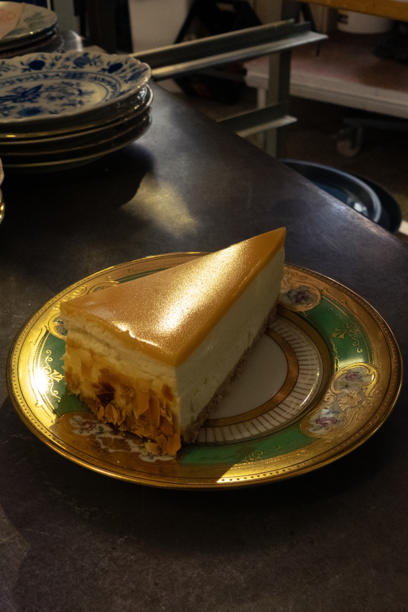
Gebacken wird, was eine Backstube mit über hundertsiebzig Jahren Übung eben backt: Käsekuchen mit Karamelldecke, Torten mit Kirschfüllung, Sahne aus dem Kupferkessel. Serviert wird samstags auf altem Porzellan — manches davon ist länger im Haus als die meisten Rezepte.
„Esst mehr Sahnetorte!"Gregor Buschmann, im Porträt von THE DORF
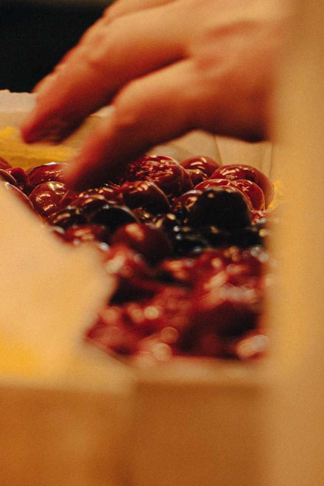
Die Backstube
Angerührt, gegossen, gestrichen, gebacken.
Hinter dem Fenster zur Akademiestraße wird unter der Woche produziert — mit Maschinen, die seit Jahrzehnten ihren Dienst tun, und Handgriffen, die man keiner Maschine überlässt.
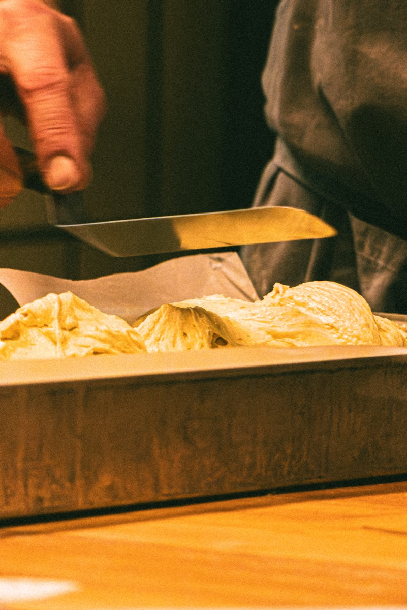
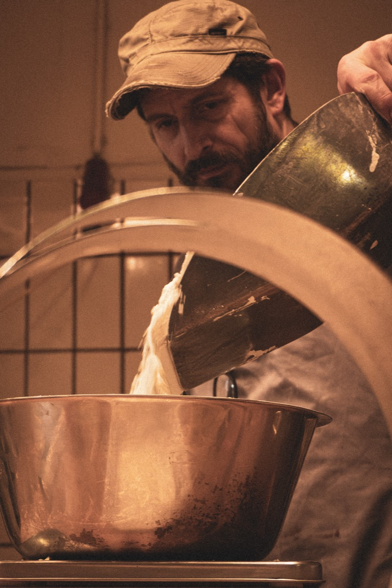
Aus der Akademiestraße
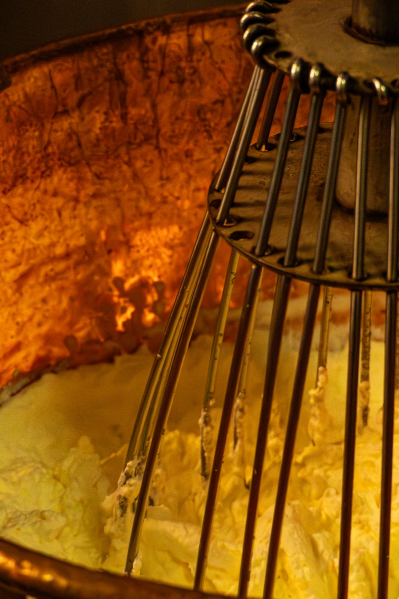
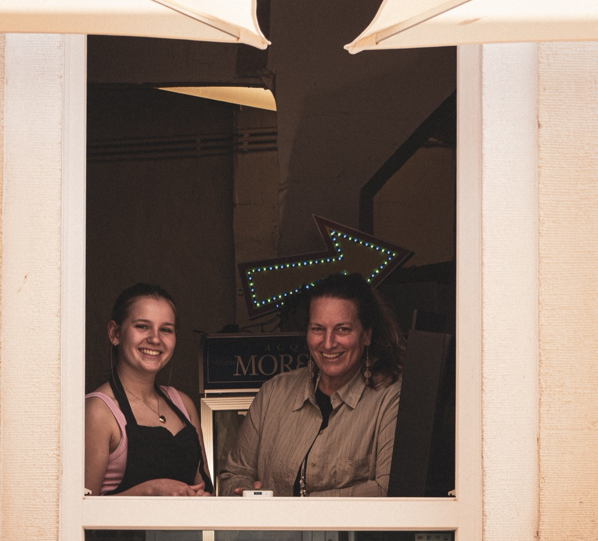
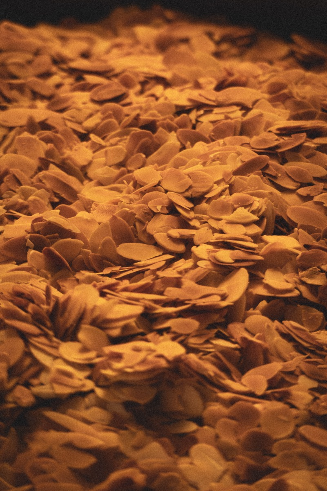
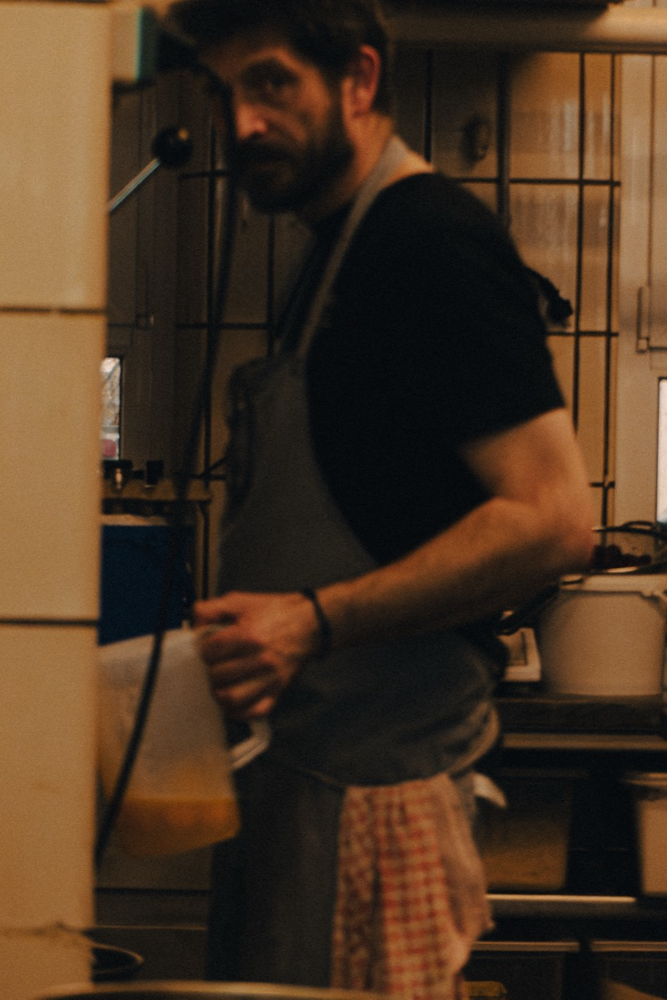
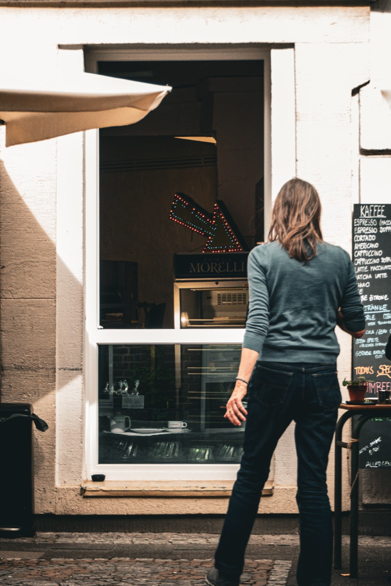
Sechs Bilder, eine Woche: Ort, Handwerk, Menschen, Samstag.
Catering
Für Cafés, Unternehmen und private Anlässe.
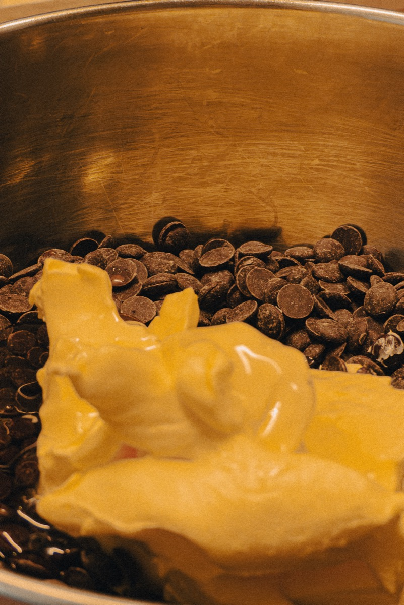
Gastronomie und Cafés
Kuchen, Torten und Pâtisserie für Betriebe, die nicht alles selbst backen können oder wollen — unter der Woche gebacken und ausgeliefert.
Unternehmen
Für Besprechungen, Empfänge und Feste. Bestellt wird nach Absprache, geliefert wird pünktlich.
Private Anlässe
Für Geburtstage und Feiern — nach Absprache und passend zum Anlass.
Anfragen über Instagram oder Facebook
Das Samstagsfenster
Samstags ist die Tür offen.
Unter der Woche wird in der Backstube produziert. Am Samstag gibt es von 12 bis 17 Uhr Kaffee und Kuchen — und meistens noch ein kurzes Gespräch über die Theke.
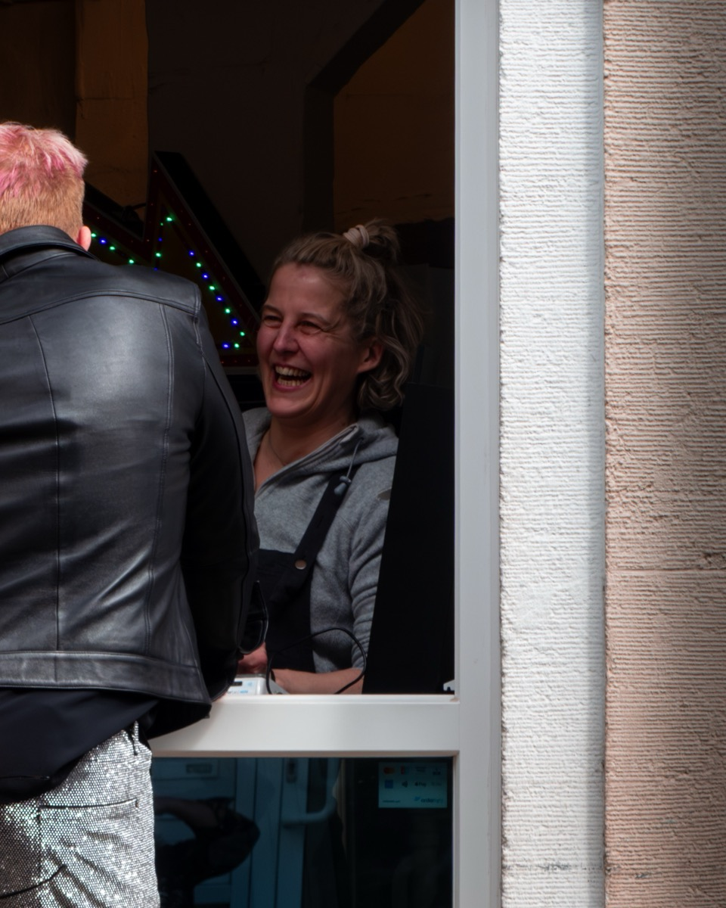
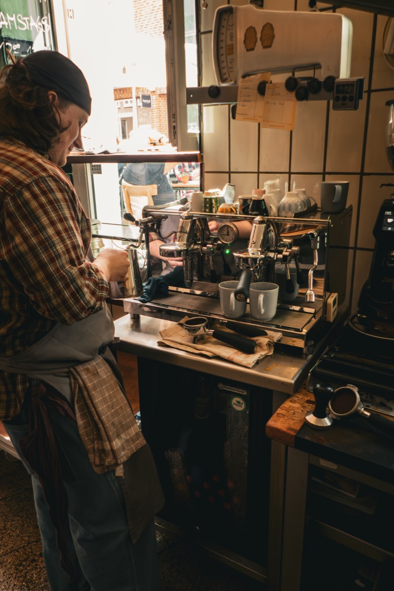
Standort
Akademiestraße 8.
Akademiestraße 8
40213 Düsseldorf
Samstags 12–17 Uhr — Kaffee und Kuchen.
Unter der Woche: Produktion, Auslieferung und Catering.